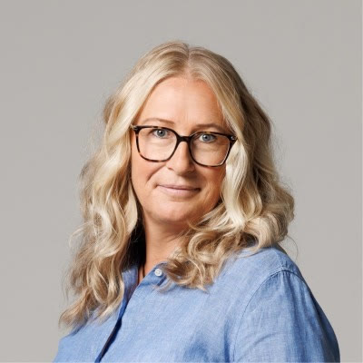

Har ni genomfört riskbedömningar inom ergonomi och upptäckt höga risker? Då finns jag här för att hjälpa er ta nästa steg – från identifierade risker till trygga, hållbara och lönsamma lösningar.

När ergonomin inte fungerar märks det snabbt – först i kroppen hos medarbetarna, men över tid även i sjukfrånvaro, kvalitet och arbetsglädje. Samtidigt kan det vara svårt att veta vilka åtgärder som faktiskt gör störst skillnad och vad de faktiskt ger tillbaka.
Jag brinner för att hjälpa företag att skapa hållbara arbetsplatser där människor både mår bra och presterar sitt bästa. Tillsammans utvärderar vi era åtgärdsförslag och räknar på vilka investeringar som ger bäst effekt – för både människorna och för er sista rad.
När vi utvärderar en insats tittar vi inte bara på en sak i taget, utan väger samman helheten:
– Vi minskar skadlig belastning och skapar sköna, säkrare arbetsstationer där kroppen håller.
– Vi räknar på den faktiska lönsamheten (ROI) och ser hur förebyggande insatser sänker sjukfrånvarokostnaderna.
– Vi förebygger fel och avvikelser som lätt uppstår när man är trött, har ont eller arbetar obekvämt.
– Vi skapar smidiga flöden där det blir lättare och roligare att göra ett bra jobb.
Att förena ekonomi med en djup förståelse för människan och kroppen är ovanligt, men för mig är det helt naturligt.
Med min bakgrund – en kandidatexamen i företagsekonomi och en kandidatexamen i fysioterapi (samt flera fördjupningskurser i ergonomi) – känner jag mig lika hemma i kalkylbladet som på verkstadsgolvet eller kontoret. Det gör att jag kan översätta ergonomiska behov till tydliga ekonomiska fakta som ledningen förstår, och ekonomiska ramar till lösningar som medarbetarna trivs med.
Vill ni få ett tydligare ekonomiskt underlag inför en ergonomisk investering? Kontakta mig så pratar vi om era behov.
Arbetsmiljöekonomen